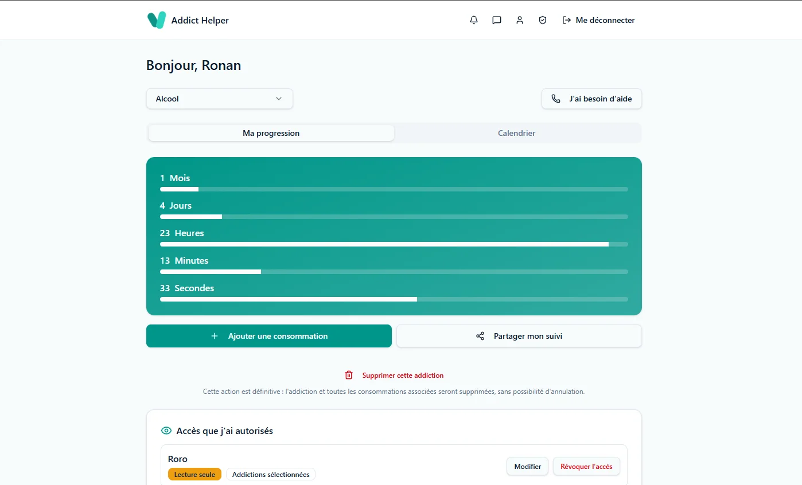

Addict helper

Context: A personal project that's both useful and a learning experience: helping people better understand and reduce problematic substance use, and connect with supporters or professionals when they need to. It's also a chance to extend my design practice into code, learning end-to-end product development through vibe coding.
Users and their needs
Two very distinct profiles to design for in parallel:
- • The person tracking their use: choose an addiction and a quit date, view a real-time abstinence counter, browse a monthly calendar of their history, and manage several addictions at once.
- • The supporter (loved one, caregiver, healthcare professional): gets dedicated access once authorized, with their own dashboard to follow and support the person they're helping.
Key features
- • Real-time abstinence counter and monthly tracking calendar
- • Managing multiple addictions in parallel, with customizable consumption presets
- • Sharing a password-protected, read-only calendar link
- • Supporter invitation and authorization system, with selective permissions (read-only, choice of visible addictions)
- • Built-in messaging (site, email, SMS) between the user and an approved supporter
- • AI-based support chatbot, available at any time
Key UX choices
Two decisions that matter more than they seem:
- • A slip can be logged without resetting the abstinence counter, so a setback doesn't feel discouraging.
- • The user stays in control of what they share and with whom: each supporter only sees the addictions and information explicitly authorized.
My role and approach
I design this product end to end: framing the need, user journeys, UX/UI, data modeling and product logic. I use AI tools to evolve the code while keeping ownership of design decisions and priorities. Supabase manages the data, accounts and access; GitHub keeps the code and its history. It’s a way to extend my design practice through to production without presenting myself as a front-end developer.
The services behind the app
Planning and design
Whimsical (new tab)
User journeys
Maps user journeys and how the app works in diagrams.
Notion (new tab)
Project management
Brings together the backlog, roadmap and documentation. The administrator can transfer feedback there.
Figma (new tab)
Design decisions
Designs and documents the product interfaces and design choices.
Early no-code tools
Lovable (new tab)
Historical tool
Used for the initial build; no longer needed to run the app. A residual Git connection still needs checking.
Claude Code (new tab)
Historical tool · optional
Former development assistant. No app dependency; configuration and documentation remain.
Developing and maintaining the project
Codex (new tab)
Development assistant
Helps evolve the code, fix bugs and check changes.
GitHub (new tab)
Code and history
Stores the source code, branches and change history.
Running the app
Supabase (new tab)
Data and accounts
Stores tracking data and messages; manages sign-in, accounts and access rights.
Vercel (new tab)
Hosting
Runs the website and deploys production and demo versions.
Cloudflare Workers AI (new tab)
Artificial intelligence
Powers the support chatbot and helps draft release notes.
Resend (new tab)
Email
Sends tracking requests and user feedback to the team.
Account emails use Supabase Auth; the SMTP provider has not been verified. Microsoft Clarity is disabled. Based on the code and documentation as of September 21, 2026; service availability has not been tested.
The code on GitHub
The project is available on GitHub, where you can follow its evolution and explore how it is built.
Mapping the product to make better decisions
As the product grows, the challenge is to keep personal tracking and support relationships coherent. I reviewed the existing journeys to distinguish four mechanisms: a contact, a help request, tracking permission and a sharing link. They do not grant the same capabilities.
The mapping brings together the perspectives of the person receiving support, the supporter and the healthcare professional, while preserving the distinctions between technical roles in the app, including the role of a loved one. It helps identify ambiguity before adding features.
01 — Workflows: understanding current behavior
Actions and decisions run from left to right, making it easier to follow the connections between tracking, sharing and support.
02 — User journeys: shifting perspective
From discovery to ending support, three perspectives bring together existing behavior, assumed needs and improvement ideas. Proposed needs and emotions remain hypotheses to validate through field research.
03 — The UX backlog: preparing validation
15 hypotheses and 3 proposed test scenarios connect each idea to a role, context and validation criterion. This AI-assisted analysis is kept separate from feedback from real people.
What I want to test next
- Does someone understand what their healthcare professional can see after adding a contact or accepting help?
- Can each supporter identify the journey for their role and its limits?
- Can someone log substance use and then turn off sharing alone, without unexpected changes to the counter or their data?
The next step is to choose a scenario, observe how people understand it and adjust the journey. These tests are proposed, not yet conducted as part of this work. The backlog supports decisions rather than promising to build every idea.
Current status
The project is still under development: the core features (tracking, counter, calendar, sharing, supporter role, messaging, chatbot) are in place, and the app continues to evolve. Feedback from real people and design hypotheses are tracked in two separate backlogs.
Have a project in mind? Need help?
Let's talk.
If you're interested in working with me or would like to talk, I'd be happy to hear from you — via LinkedIn (new tab), or directly by email at benech.r(@)gmail.com. I look forward to hearing from you!
To return to the homepage, head this way!